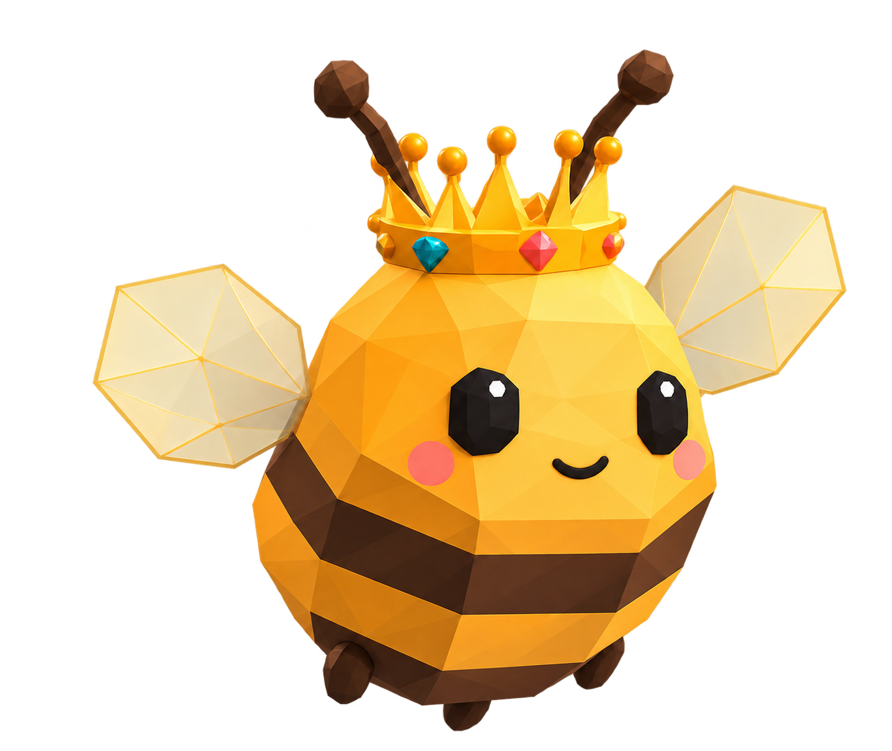
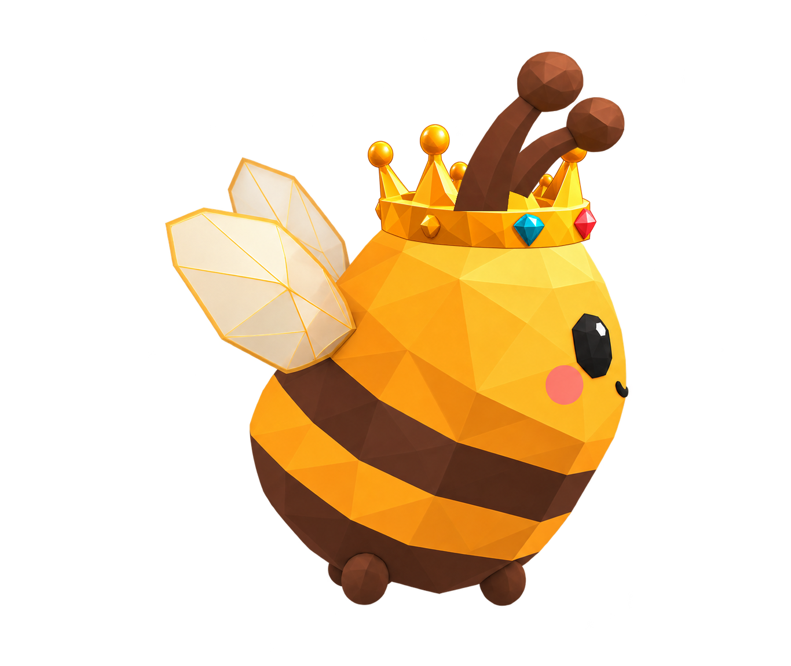
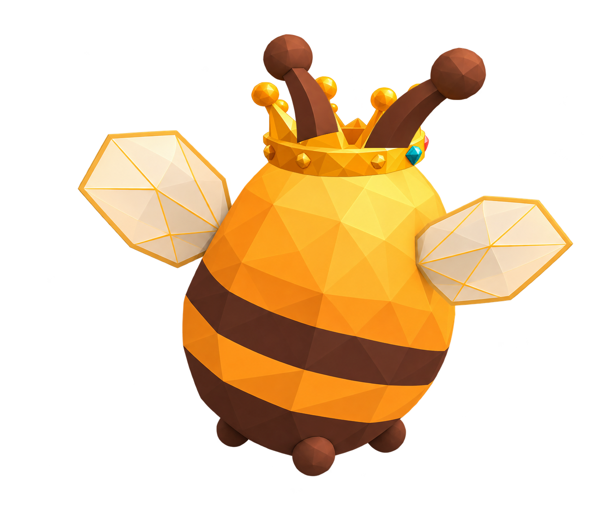
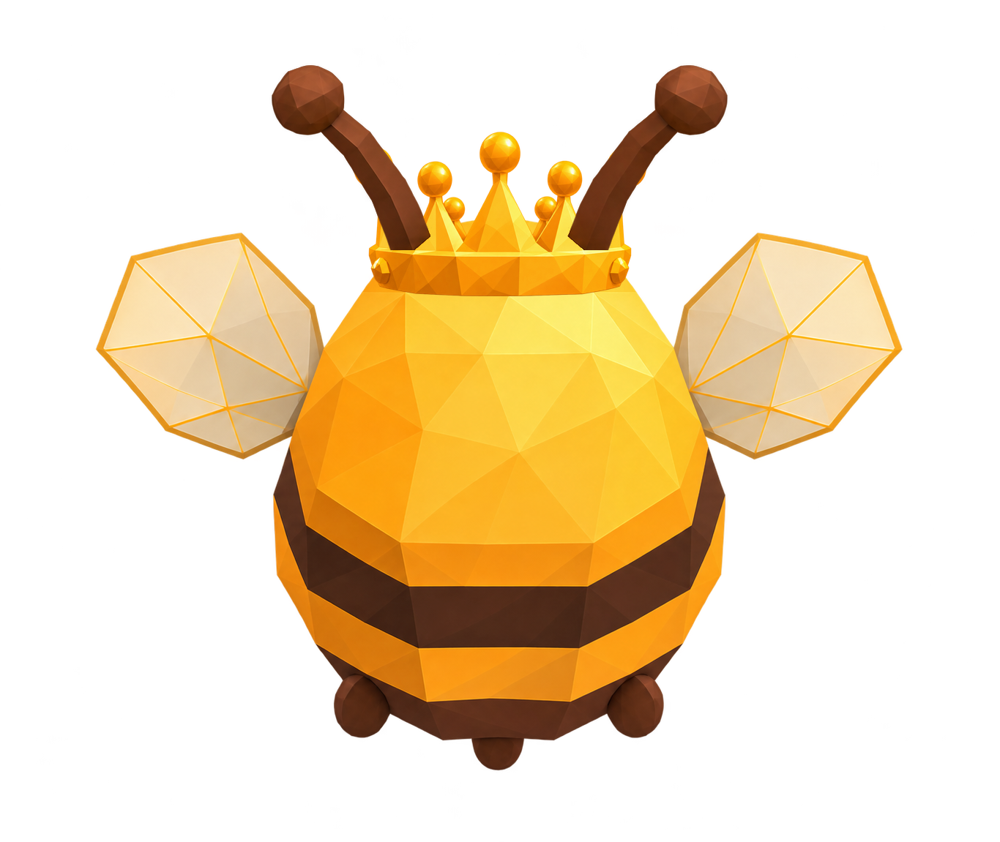

Корона на ракурсах Жужи
Пилотная примерка. Тело и утверждённый передний ракурс сохранены.
Обратные три четверти и левый профиль сейчас зеркальные — расположение цветных камней на них тоже отражается.
Спереди

Утверждённые 3/4 спереди

Профиль

Три четверти сзади

Со спины
Основная игра и прежние превью не изменены.